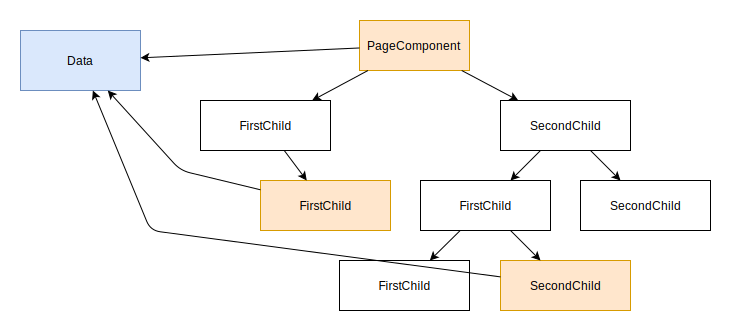

Lösung für das Datenmanagement

Singleton oder Global State
- globales Objekt
- jeder kann darauf zugreifen
- im schlimmsten Fall ein
- direkter Zugriff
- statischer Zugriff
Mögliche Nachteile eines Global States
- hohe unkontrollierte Kopplung im ganzen Projekt
- direkte und statische Aufrufe sorgen für die hohe Kopplung
- Fehlersuche wird schwieriger durch:
- Seiteneffekte
- Verteilung im ganzen Projekt
- es wird passieren
- Murphys Law:
- Anything that can go wrong will go wrong.
Mögliche Nachteile eines Global States
- Unvorhersehbar
- jeder kann den State bearbeiten
- Seiteneffekte
- keiner weiß:
- warum sich der State ändert
- wo sich der State ändert
Global State Richtig
State Management mit NgRx
@startuml
component store
component reducer
component action
component selector
node UI {
component presentation
component control
}
reducer -> store
store --> selector
reducer <-- action
store ---> presentation
selector -> presentation
action <-- control
@enduml
Store
- enthält den aktuellen State
- quasi ein Stream aus States
- State
- ist immutable
- wird neu erstellt bei jeder Änderung
- wird von einem Reducer erstellt
- kann aus mehreren Teilen bestehen
Reducer
- verarbeitet Actions
- baut aus State und Action neuen State
- State darf nur ersetzt werden!
- keine Änderungen
- führt nur synchrone Operationen aus
Action
- eine Interaktion des Nutzers
- löst Logik im Reducer aus
- kann Daten für den Reducer enthalten
- wird asynchron an einen Reducer dispatched (geschickt)
Funktionsweise des State Managements
- Nutzer löst Action aus
- Reducer verarbeitet Action und erstellt neuen State
- UI reagiert auf den State
@startuml
component store
component reducer
component action
component selector
node UI {
component presentation
component control
}
reducer -> store
store --> selector
reducer <-- action
store ---> presentation
selector -> presentation
action <-- control
@enduml
Selector
- ist nicht zwingend notwendig
- mit einem Selector kann man
- teile des States auslesen
- eine Projektion auf dem State auslösen
- Selectors können verschachtelt werden
Vorteile von State Management
- Daten bzw. State kann von überall abgerufen werden
- Fehler durch Seiteneffekte werden eingeschränkt
- Daten werden nicht mehrmals vom Backend geladen
- basiert auf Functional Reactive Programming (FRP)
- macht die Anwendung häufig Nutzerfreundlicher
- Anwendung soll nach einer Nutzereingabe nicht "blockieren"
- zentraler State hilf beim Entwickeln/Debuggen